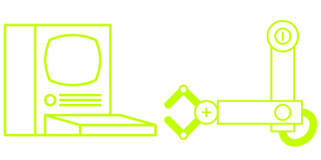
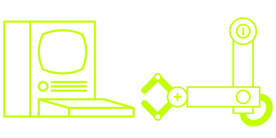

Concept
Fishy Flop is a fin-tastic mobile game by The Fishy Flop Team. The game combines the physics of games like Angry Birds with the quirky controls of games like QWOP.
I ensured that the game featured intuitive interfaces and vibrant, contemporary visuals.

 
